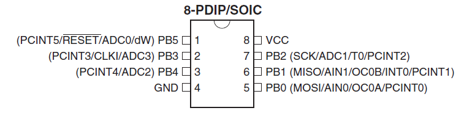

Memo fact sheet
Links
Samples
Blink
// includes
#include <avr/io.h>
#include <util/delay.h>
//
// main function
//
int main(void) {
//factory settings is to divide internal clock 8MHz by 8.
//don't, and just run at 8 MHz (set the clock divider to 1 so no effect)
CLKPR = (1<<CLKPCE);
CLKPR = 0; // Divide by 1
//port B pins 0-5 go OUTPUT
DDRB = 0xFF;
while (1==1){
//all on
PORTB = 0xFF;
//wait a little
_delay_ms(500);
//all off
PORTB = 0x00;
//wait again
_delay_ms(200);
}
}
PWM
See
http://avrbasiccode.wikispaces.com/
// includes
#include <avr/io.h>
#include <util/delay.h>
#include <avr/interrupt.h>
//
// main function
//
int main(void) {
//factory settings is to divide internal clock 8MHz by 8.
//don't, and just run at 8 MHz (set the clock divider to 1 so no effect)
CLKPR = (1<<CLKPCE);
CLKPR = 0; // Divide by 1
//port B pins 0-5 go OUTPUT
DDRB = 0xFF;
//PWM : Use this line...
TCCR0A |= ((1 << COM0A1) | (1 << COM0A0) // COM0A1 - COM0A0 (Set OC0A on Compare Match, clear OC0A at TOP)
| (1 << WGM01) | (1 << WGM00)); // WGM01 - WGM00 (set fast PWM)
//...or those lines. No (noticeable) difference.
/* Set Fast PWM mode. */
//TCCR0A |= (1<<WGM00) | (1<<WGM01);
/* Clear 0C0A on compare. */
//TCCR0A |= (1<<COM0A1);
/* Start timer, no prescaling. */
TCCR0B |= (1<<CS00);
//initial PWM value is 0
OCR0A = 0x00;
while (1==1){
for (int i=0; i < 255; i %20%20){
OCR0A = i;
_delay_ms(5);
}
for (int i=0; i < 255; i %20%20){
OCR0A = 255-i;
_delay_ms(5);
}
}
}
Soft PWM on 3%20 pins
Pick 3 pins, assign to each a 8bit desired value [0-255], loop and light them for a small quantum of time △ (like 50 us). In my implementation,
current turn a byte that keeps on incrementing and overflowing between 0 and 255.
- Starting at current turn==0 when you light everybody on (turn pins HIGH).
- When the current turn (a byte that keeps on rolling between 0 and 255) reaches the desired value, turn that pin LOW.
- At each turn pause a little time (△) for the POV and increment current turn
Therefore a pin that has a duty of 25% = 256 * 0.25 = 64 will be HIGH for 64 * △ = 3,200 us = 3.2 ms and LOW for (256-64) * △ = 192 * △ = 9.6 ms over a total cycle of 12.8 ms (). You have a nice PWM of 78Hz, and with your Attiny running at 8 MHz with the internal oscillator it's piece of cake for it. You can even find a little time every
n cycles in between (who said with an interrupt ?) to read the ADC value of the LM35 and convert that to a color. Don't read the LM35 too often, it's useless. Maybe once every few seconds is more than plainly sufficient.
uint8_t vRGBCurrentRound = 0;
while(1)
{
//todo : put this in an interrupt?
if (vRGBCurrentRound == 0){
/*
//make pins B0-2 high
PORTB =
(1 << PORTB0)
| (1 << PORTB1)
| (1 << PORTB2)
;
*/
PORTB = 0x00;
if (mRGB[0] > 0)
PORTB |= (1 << PORTB0);
if (mRGB[1] > 0)
PORTB |= (1 << PORTB1);
if (mRGB[2] > 0)
PORTB |= (1 << PORTB2);
}
if (vRGBCurrentRound == mRGB[0] && vRGBCurrentRound != 255){
PORTB &= ~(1 << PORTB0);
}
if (vRGBCurrentRound == mRGB[1] && vRGBCurrentRound != 255){
PORTB &= ~(1 << PORTB1);
}
if (vRGBCurrentRound == mRGB[2] && vRGBCurrentRound != 255){
PORTB &= ~(1 << PORTB2);
}
//and the POV
_delay_us(50);
vRGBCurrentRound%20%20;
}